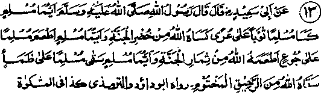
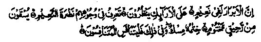
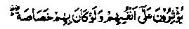
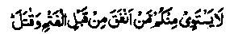
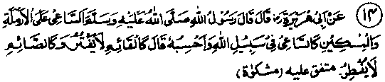

Chapter One · Section (b): Ahadith on the virtues of spending for the cause of Allah
10. Feeding a hungry person

Hadith 13
Muhammad Sallallaho alaihe wasallam has said, "whoever gives clothes to a naked Muslim, Allah Ta'ala will give him a green dress to wear in Jannah; and he who gives something to eat to a hungry Muslim, Allah Ta'ala will feed him with the fruits of Jannah; and the one who gives a drink of water to a thirsty Muslim, Allah Ta'ala will give him a drink of sealed wine in Jannah."
Note: The 'sealed wine’ refers to that holy drink which, as indicated in the Holy Qur’an, would be reserved for the pious people in Jannah.
As Allah Ta‘ala has said:

"The righteous will be in delightful comfort, sitting in their (curtained) seats, (looking at the wonders of Jannah). O listener, you will notice the freshness and gaiety in their faces, due to 'the comforts (of Jannah). They will have the sealed wine for a drink, the seal will be of musk. The greedy ought to have the greed for this bliss (this is what one should strive for)." (at-Tatfeef: 22-26)
Mujahid Rahmatullah alaihe says that Raheeq is one of the types of wine in Jannah, which is made from musk with a mixture of the Tasneem which, according to Qatadah Rahmatullah alaihe, is the most superior drink of Jannah. The favourities will drink it pure, while those below them will have a mixture of it. According to Hasan Basri Rahmatullah alaihe, Raheeq is the wine which has a mixture of Tasneem. The above Hadith mentions the virtues relating to giving a meal or a drink to a hungry person and a dress to the naked. It may be that the giver himself be in need of food or drink or clothes, yet he gives to others. With this aspect, the Hadith is in line with the interpretation of the Ayat No. 28 under Ayaat above, meaning:

They prefer others to themselves, although they have the same need.
Another view would relate it to the state of the recipients need; if they are in urgent need of something and that need is fulfilled by someone, the latter will receive correspondingly more reward and blessing of Allah Ta'ala than that of Sadaqah to the poor under normal conditions. For example, there is a reward for giving clothes to a poor person, but for giving cloth to a naked person or one in tatters, the reward will be considerably more. To give food to a poor person will be definitely rewarded, but to feed a starving person will receive exceedingly greater reward and blessings. Similarly, to give water for drinking to anybody is rewarded, but to give water to someone who is extremely thirsty will receive so much reward and blessings that his life-long sins would be expunged, as has been mentioned under Hadith No. 10 above, wherein a prostitute got forgiveness for the sins of all her life for giving water to a thirsty dog.
Under the series of Ayaat above, at No. 23 a saying of Rasulullah Sallallaho alaihe wasallam has been recorded that one who goes from door to door, begging for a morsel or two of bread, is not really a poor person; it is the one who neither has sufficient provision to meet his needs nor anyone knows about his circumstances to come to his help; he is the one truly poor.
Ibne Umar Radhiallaho anho has narrated the saying of Rasulullah to the effect that whoever undertakes to meet the needs of a brother, Allah Ta'ala will look after his needs; and whosoever saves a Muslim from calamity, Allah Ta'ala will protect him from one of his calamities on the Day of Judgment; and when someone provides a dress to a Muslim to cover his body and prevents a disclosure of his shortcomings, Allah Ta‘ala will provide for him the same type of cover on the Day of Qiamah. (Mishkaat)
Several such matters have been mentioned by the Sahabah Radhiallaho anhum. Another Hadith has it that when someone keeps quiet about some defect in a person, be it concerning his body or behaviour, the reward for that will be the same as for digging out of the grave a man who has been buried alive. (Mishkaat).
Allah Ta'ala has said, (which has been mentioned under Ayat No. 25):

Those who spent their money and fought in the path of Allah before the conquest of Makkah, cannot be equalled by others, (al-Hadeed: 10)
The reason for this as stated by the Ulama is that the need for spending before the conquest of Makkah was very great; that is why it is rated very high.
According to the author of Jamal, when Islam and the Muslims had not yet attained high honour and prestige and the Muslims were in a greater need of help, both physical and financial, they were the first and the foremost among the Muhajireen and Ansaar, about whom Rasulullah Sallallaho alaihe wasallam has said that Sadaqah in gold, of the size of mount Uhud, given by others, will not equal a Mudd (about a kilogram) or even half Mudd given by those in the ranks of early Muhajireen and Ansaar. Apart from this, there are many narrations wherein Rasulullah Sallallaho alaihe wasallam has warned and exhorted his companions to give preference to those who are in urgent need. To accept an invitation to Valimah (marriage - feast) is desirable. However, one of the Ahadith narrates Rasulullah Sallallaho alaihe wasallam as saying that the Valimah meal is the worst type of meal, as only the rich usually are invited to it and the poor are overlooked. (Mishkaat). Thus the feast is of worst kind when only important persons are invited to it, and not the poor ones, but if that is not so, attending it is desirable according to Sunnah.
One Hadith says that a person will be rewarded for giving water to a Muslim, when the water is available generally, as if he had freed a slave; whereas giving a drink of water to someone where water is scarce, will count equal to saving a dying person. (Kanz). One Hadith says that the highest Sadaqah is to give food to a hungry (man or animal). Another Hadith says that the virtue which Allah Ta'ala appreciates most is to feed a starving destitute or to pay his debts or to remove his affliction. Ubaid Ibne Umair Radhiallaho anho has said that on the Day of Judgment the people will rise in a state of extreme hunger and thirst and in total nakedness; however, an individual who fed someone for the sake of Allah Ta'ala, will be granted food to his fill; similarly, the one who gave water to someone for the pleasure of Allah, will have his thirst quenched fully, and the one who gave someone clothes will receive a dress from Allah Ta'ala. (Ihya).

Hadith 14
Rasulullah Sallallaho alaihe wasallam has said that he who strives to help a needy unmarried woman or a poor person ft like the one who strives in Jehaad and, probably he added, he is like one who prays all night without the slightest slackness and is like a person who fasts every day for his whole life.
Note: A woman without husband usually means a widow or the one who cannot find a husband. This describes the reward for the effort made in helping these cases irrespective of any results. Another Hadith says that a person is rewarded like those who fight in the path of Allah if he undertakes to fulfil the need of a Muslim brother or tries to give him some benefit
Another Hadith says that any one helping an afflicted brother will be granted by Allah Ta'ala the power to stand firm on the Day when mountains will move from their places (i.e. one Doomsday). (Kanz). A fine point emerges from this Hadith that in the present day disturbed times, people get easily upset except those who keep helping and assisting others. Another Hadith says that if a person meets the need of a Muslim brother in this life, Allah Ta'ala will meet seventy of his needs, the least of which will be the forgiveness of all his sins; and if one takes up a cause for another person with those in power for solving his problem, Allah Ta'ala will help him to cross the ‘Siraat’ (the Bridge over Jahannam) on the Day of Judgment when many will slip while crossing. (Kanz)
This Hadith is of great value for those who have an access to those in power, they may take up legitimate problems of the subordinates and other sufferers with the concerned authorities and give it due importance. It is to be remembered that crossing of the ‘Siraat’, is the most difficult and the hardest of things on the Day of Judgment and, by this ordinary effort here, it will be made easy for them, to their great advantage. However, the effort is to be made for the sake of Allah Ta'ala and not for self publicity or popular esteem; the effort made for the sake of Allah will automatically bring good name and respect, far greater than desired by oneself but, if there be a personal motive behind the act, it will eliminate the purity of intention behind the effort, which has to be made for the sake of Allah Ta'ala to gain the promised reward.